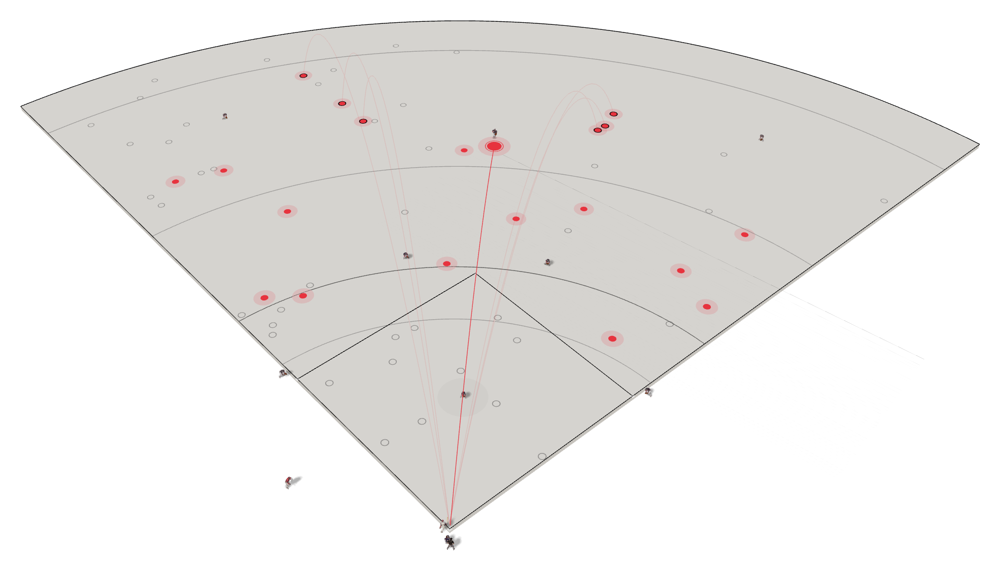

SPRAYLAB
사용법
필드
기능
비교
차트 열기
사회인야구 기록 · 분석
타석 하나 찍으면,
차트가 그려집니다
더그아웃에서 공이 떨어진 자리를 탭하세요. 스프레이차트와 타율·OPS·방향 분포가 그 자리에서 계산되고, QR 하나로 팀 전체가 봅니다.
무료로 시작하기
어떻게 쓰나요
가입 없음 · 설치 없음 · 영구 무료

시즌 타율
.333
OPS
1.050
타구 방향 · 당겨치기
36%
.333 / .467 / .583
타율 · 출루율 · 장타율이 타석마다 갱신
OPS · wOBA · ISO
세이버메트릭스 지표까지 자동 계산
당김 · 센터 · 밀어
타구 방향 분포와 코스별 핫존
PNG · 엑셀 · QR
리포트와 데이터 내보내기